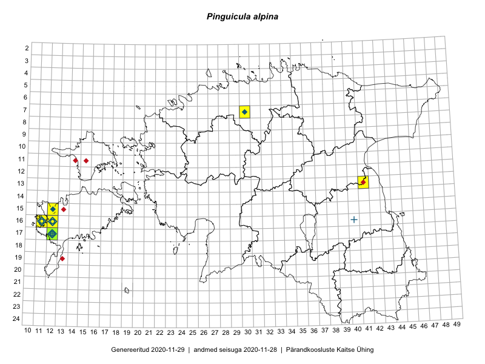

Pinguicula alpina
Uuendatud: 2016-12-02
Kaardile koondatud taksonid: Pinguicula alpina L.

Kaart põhineb 8 vaatlusel. Taksonit on leitud 3 ruudust.
Viited andmebaasikirjetele
- Mari Reitalu: 2014-08-31: 17-12: ala
- Mari Reitalu: 2015-08-13: 17-12: ala
- Mari Reitalu: 2015-08-11: 17-12: ala
- Mari Reitalu: 2015-08-11: 17-12: GPS punkt
- Mari Reitalu: 2015-07-02: 17-12: ala
- Mari Reitalu: 2015-09-03: 16-12: ala
- Mari Reitalu: 2015-09-03: 16-12: GPS punkt
- Mari Reitalu, Triin Reitalu: 2016-06-02: 16-11: GPS punkt